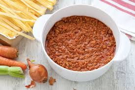

Potete preparare il ragù alla bolognese con anticipo e scaldarlo al momento del bisogno.
Potete conservarlo in un recipiente di vetro, ben coperto con pellicola, per 2-3 giorni al massimo.
Se preferite potete anche congelare il ragù.
Ingredienti ---------------------
Carne Bovina 500g
Passata di pomodoro 250g
Cipolle dorate 50g
Vino bianco 250g
Acqua 3L
Sale fino q.b.
Carne Bovina 500g
Passata di pomodoro 250g
Cipolle dorate 50g
Vino bianco 250g
Acqua 3L
Sale fino q.b.

Informazioni ---------------------
Difficolta':Facile
Preparazione: 20 min
Cottura: 210 min
Dosi per: 4 persone
Costo: MEDIO
Preparazione ---------------------
Per preparare il ragù alla bolognese cominciate tritando finemente al coltello il sedano, la carota sbucciata e spuntata e la cipolla mondata.
Dovrete ottere 50 g per ciascun ingrediente.
Poi versate l’olio in una pentola e aggiungete il trito lasciate andare per una decina di minuti a fuoco dolce mentre mescolate, di tanto in tanto . Trascorso il tempo il soffritto dovrà risultare appassito ed il fondo del tegame invece asciutto. Unite la carne di manzo macinata grossa ed il macinato di maiale.
Anche queste dovranno rosolare lentamente per una decina di minuti, mescolate di tanto in tanto. Inizialmente fuoriusciranno tutti i succhi ma una volta asciugati potrete sfumare con il vino bianco . Non appena l’alcol sarà evaporato e il fondo sarà tornato, ancora una volta, ben asciutto aggiungete la passata di pomodoro . Poi versate soltanto 1 dei 3 litri di acqua .
aggiungete un pizzico di sale, mescolate e lasciate cuocere a fiamma medio-bassa per un’oretta. Trascorsa la prima ora potrete aggiungere un altro litro d’acqua, mescolare e far cuocere ancora per un'ora. Al termine della seconda ora di cottura, versate l'ultimo litro di acqua e continuate a far cuocere sempre a fiamma dolce per un'altra ora. In questo modo il ragù cuocerà per almeno 3 ore 10. A fine cottura il risultato sarà ben asciutto, regolate di sale e di pepe, spegnete la fiamma e unite il latte ; un’ultima mescolata ed ecco il ragù alla bolognese pronto per l’uso !